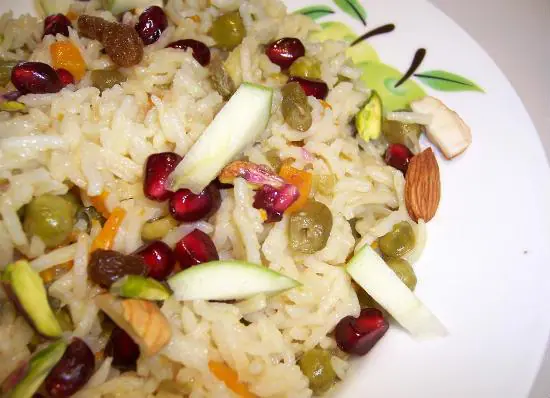

Kashmiri Pulao

Description
A very popular dish from Kashmiri cuisine, this pulao is loaded with fruits and garnished with almonds. Quick and
easy to make, this Kashmiri Pulao is sweet and aromatic.
Ingredients
- Basmati Rice - 500 gms
- Apple - 1 cup, chopped
- Pineapple - 1/2 cup, chopped
- Black Grapes - 1/4 cup, seedless
- Green Grapes - 1/4 cup, seedless
- Pomegranate Seeds - 1/2 cup
- Ginger Garlic Paste - 2 tsp
- Cardamom - 2
- Cloves - 2
- Cinnamon - 2
- Bay Leaves - 2
- Onions - 50 gms, finely chopped
- Oil - 50 ml
- Ghee - 100 ml
- Water - 500 to 600 ml
- Salt as per taste
To Garnish
- Almonds - few, slivered
- Pistachios - few
Steps
- Wash the rice 2 to 3 times and soak for 20 minutes.
- Heat little oil in a pan.
- Fry the cardamoms, cinnamons, bay leaves and cloves for 30 seconds.
- Add the onions, ginger garlic paste and stir well.
- Cook till the onions turn light golden.
- Pour water and bring to a boil.
- Add the rice and salt. Stir well.
- Add ghee and simmer till the water has reduced and rice is half-cooked.
- Cover the pan with a lid and cook on low flame for 10 to 15 minutes or till the rice is cooked.
- Alternatively, you can pressure cook for 2 to 3 whistles.
- Remove and gently stir the rice.
- Garnish with the chopped apple, pineapple, pomegranate, almonds, pistachios and grapes.
- Serve at once.